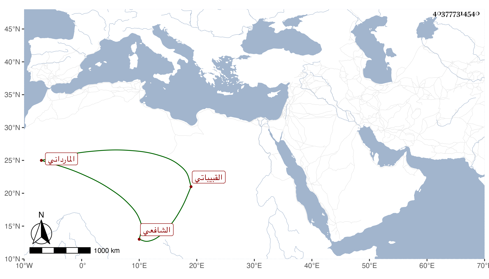

0902Sakhawi.DawLamic.ITO20230111-ara1.EIS1600.403777314540
Biography ID: 403777314540
313
محمد بن أرغون ناصر الدين المارداني القبيباتي الشافعي . ولد سنة اثنتين وخمسين وسبعمائة وخدم جنديا عند أقطمر عبد الغني النائب وتنقلت به الأحوال حتى عمل الاستادارية عند جماعة من كبار الأمراء ثم ولاه الجيزية ثم الحجوبية ، وكان عارفا بالأمور صحب الناس وعرف أخلاق أهل الدولة وعاشرهم ومازحهم بل هو من رجال العالم مع كونه اشتغل بالعلم وجالس العلماء وخالطهم وحفظ كثيرا من المسائل الفقهية وكان يذاكر بها ويقرأ عنده الروضة وغيرها ويكثر من مسائلة من يلقاه من العلماء أضر في سنة أربع عشرة وانقطع بمنزله في التبانة حتى مات في ثاني عشرى رمضان سنة أربع وثلاثين ، ذكره شيخنا في معجمه وانبائه وقال : سمعت منه فوائد ولطائف وكان ينتمي لأصهارنا بقرابة من النساء . وتبعه في ذلك المقريزي في عقوده رحمه الله .
